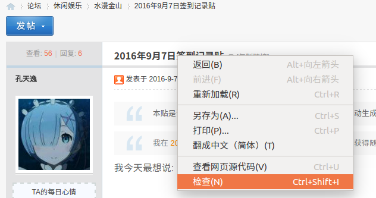
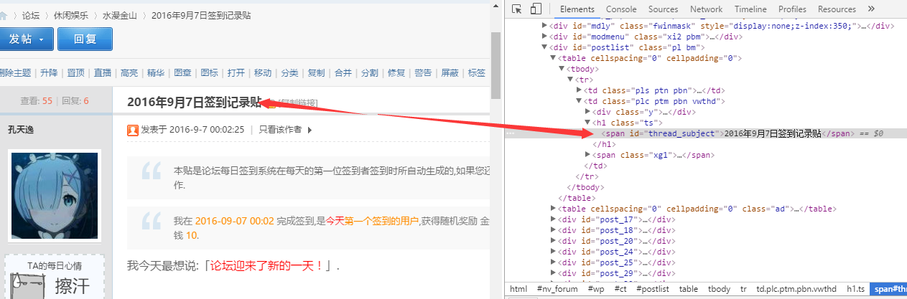
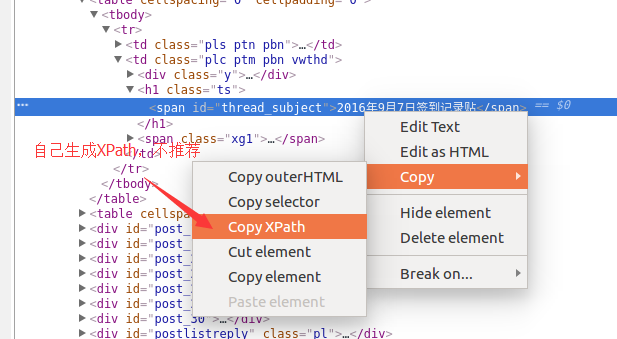
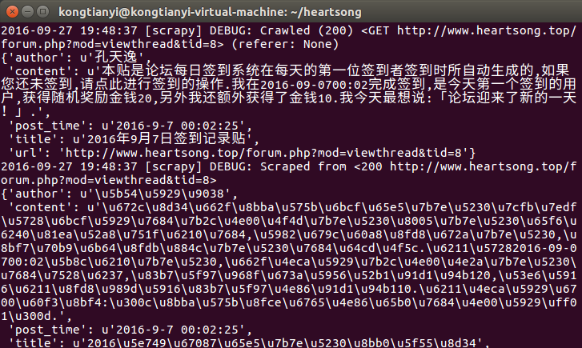
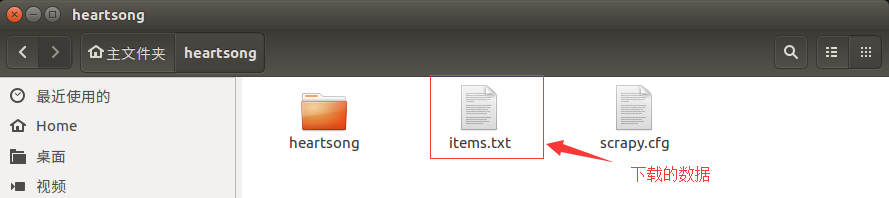
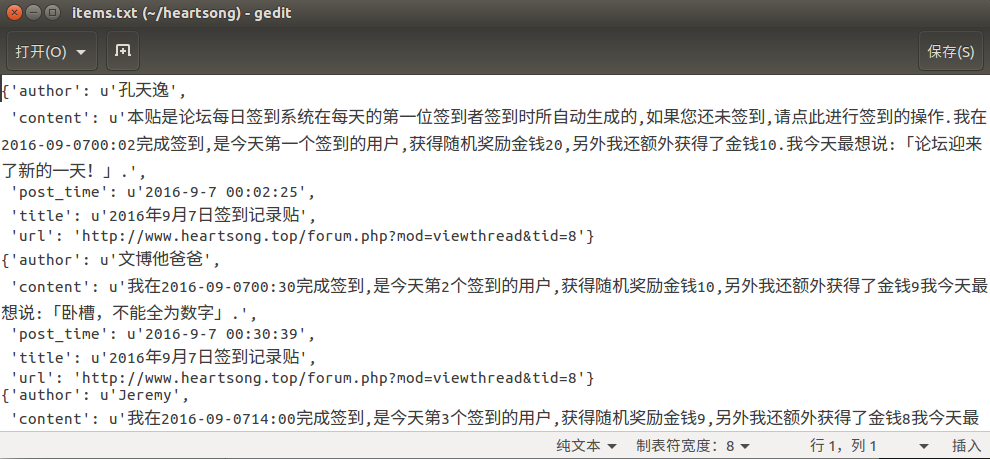

声明
本教程为原创教程，转载请注明出处http://kongtianyi.cn/2016/09/26/python/Scrapy-Lesson-2/
本节内容
在这一小结，我将介绍如何使用Scrapy通过Selector选择器从网页中提取出我们想要的内容，并将这些内容存放到本地文件。
我们的目标网页是http://www.heartsong.top/forum.php?mod=viewthread&tid=8,一个有七层楼的帖子。我们要获取到每一层楼的下列信息：
- 所属主题帖的标题
- 所属主题帖的url
- 这一楼层的作者
- 这一楼层的发表时间
- 这一楼层的内容
Selector选择器
在Scrapy中，也可以使用BeautifulSoup来解析网页，但是，我们推荐使用Scrapy自带的Selector选择器来解析网页，没别的原因，效率高。Selector选择器有XPath方法和css方法两种选择方法，我使用的是XPath方法。
后注：在新版的Scrapy1.2.x版本中，默认使用Selector选择器，不再需要显式调用。
XPath
XPath 是一门在 XML 文档中查找信息的语言。因为网上的教程有很多，在此处推荐两个，我自己就不多讲了。一个菜鸟教程的XPath文字教程，一个是极客学院的XPath视频教程，后者需要实名认证一下就可以观看，也不麻烦，个人比较推崇后者，老师讲的很易懂。相信我，根据教程只需要半个小时你就能明白XPath，再根据下面我的代码对照巩固一下，你就能掌握它了。
使用Chrome分析网页
我们使用Chrome浏览器(firefox也是类似的)来分析网页，分析我们的XPath该怎么去写，比如说我们现在要分析帖子的标题
右键帖子标题，选择检查

此时，Chrome的调试工具会跳出来，并且自动定位到源代码中我们要检查的元素的位置

之后根据代码结构我们很轻松的就得出其XPath1
//*[@id="thread_subject"]/text()
其实在某些时候也可以直接右键元素，选择copy xpath，但是这种方法在实践中用处基本为零，因为很难去找出多个网页的共同特质，所以一般情况下我们还是要自己去分析。

在这里有必要提醒一个神坑，在下面代码中也有体现，详见我从前写的这篇文章Scrapy匹配xpath时tbody标签的问题
这个坑给我的启示是，当发现了感觉不能用科学解释的错误的时候，就检查一下获取到的源代码吧！
代码
不说废话了，直接上代码。
首先，修改items.py文件,定义好我们要提取的内容1
2
3
4
5
6
7
8
9
10# -*- coding: utf-8 -*-
import scrapy
class HeartsongItem(scrapy.Item):
title = scrapy.Field() # 帖子的标题
url = scrapy.Field() # 帖子的网页链接
author = scrapy.Field() # 帖子的作者
post_time = scrapy.Field() # 发表时间
content = scrapy.Field() # 帖子的内容
然后来到heartsong_spider.py,编写爬虫1
2
3
4
5
6
7
8
9
10
11
12
13
14
15
16
17
18
19
20
21
22
23
24
25
26
27
28
29
30
31
32# -*- coding: utf-8 -*-
# import scrapy # 可以写这句注释下面两句，不过下面要更好
from scrapy.spiders import Spider
from scrapy.selector import Selector
from heartsong.items import HeartsongItem # 此处如果报错是pyCharm的原因
class HeartsongSpider(Spider):
name = "heartsong"
allowed_domains = ["heartsong.top"] # 允许爬取的域名，非此域名的网页不会爬取
start_urls = [
"http://www.heartsong.top/forum.php?mod=viewthread&tid=8" # 起始url，此例只爬这个页面
]
def parse(self, response):
selector = Selector(response) # 创建选择器
# 后注：在新版的Scrapy1.2.x版本中，不再需要这句话，直接使用response.xpath("xx")即可
table = selector.xpath('//*[starts-with(@id, "pid")]') # 取出所有的楼层
for each in table: # 对于每一个楼层执行下列操作
item = HeartsongItem() # 实例化一个Item对象
item['title'] = selector.xpath('//*[@id="thread_subject"]/text()').extract()[0]
item['author'] = \
each.xpath('tr[1]/td[@class="pls"]/div[@class="pls favatar"]/div[@class="pi"]/div[@class="authi"]/a/text()').extract()[0]
item['post_time'] = \
each.xpath('tr[1]/td[@class="plc"]/div[@class="pi"]').re(r'[0-9]+-[0-9]+-[0-9]+ [0-9]+:[0-9]+:[0-9]+')[0].decode("unicode_escape")
content_list = each.xpath('.//td[@class="t_f"]').xpath('string(.)').extract()
content = "".join(content_list) # 将list转化为string
item['url'] = response.url # 用这种方式获取网页的url
# 把内容中的换行符，空格等去掉
item['content'] = content.replace('\r\n', '').replace(' ', '').replace('\n', '')
yield item # 将创建并赋值好的Item对象传递到PipeLine当中进行处理
最后到pipelines.py中保存爬取到的数据：1
2
3
4
5
6
7
8
9
10
11
12
13
14
15# -*- coding: utf-8 -*-
import heartsong.settings
class HeartsongPipeline(object):
def process_item(self, item, spider):
file = open("items.txt", "a") # 以追加的方式打开文件，不存在则创建
# 因为item中的数据是unicode编码的，为了在控制台中查看数据的有效性和保存，
# 将其编码改为utf-8
item_string = str(item).decode("unicode_escape").encode('utf-8')
file.write(item_string)
file.write('\n')
file.close()
print item_string #在控制台输出
return item # 会在控制台输出原item数据，可以选择不写
运行
依旧进入项目目录，在终端输入1
scrapy crawl heartsong
看一下输出的信息，没问题。

看一下生成的本地文件，也ok。


小结
本部分介绍了页面解析的方法，下一部分将会介绍Scrapy爬取多个网页，也是让咱的爬虫真正爬起来的一部分。结合这两节，你就能将我的论坛上的所有帖子都爬下来了。